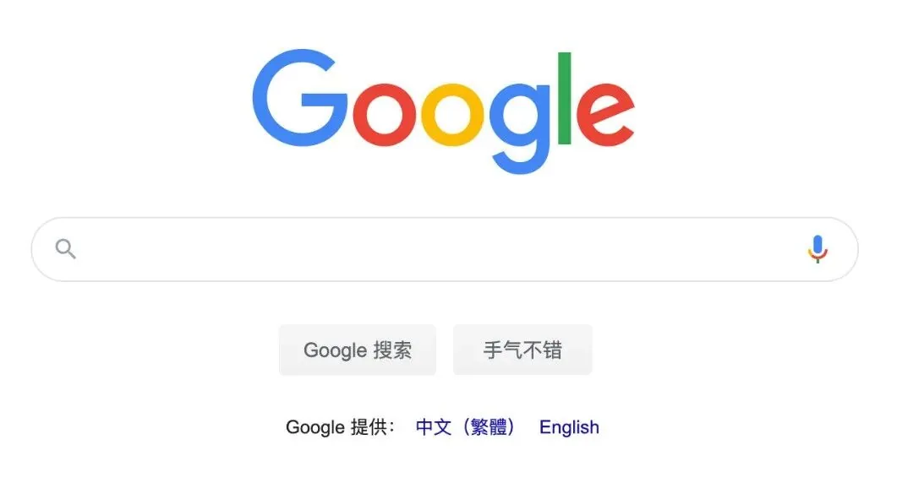
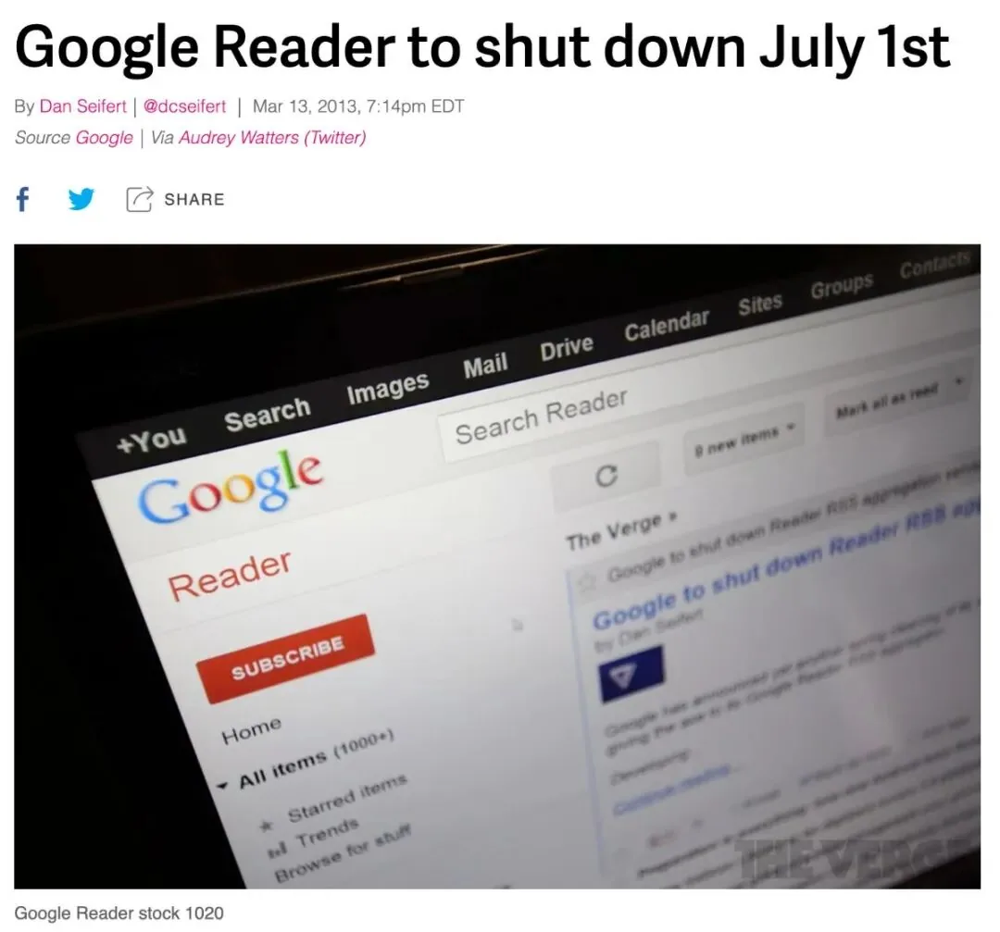
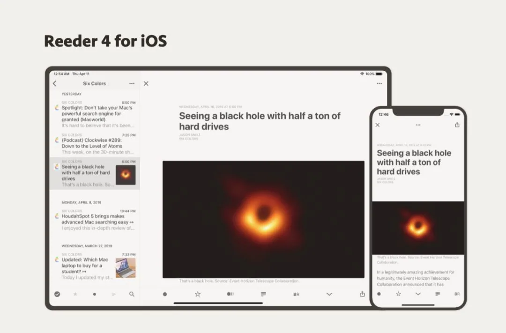
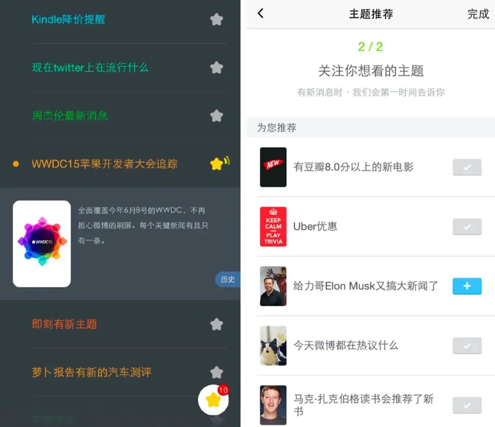
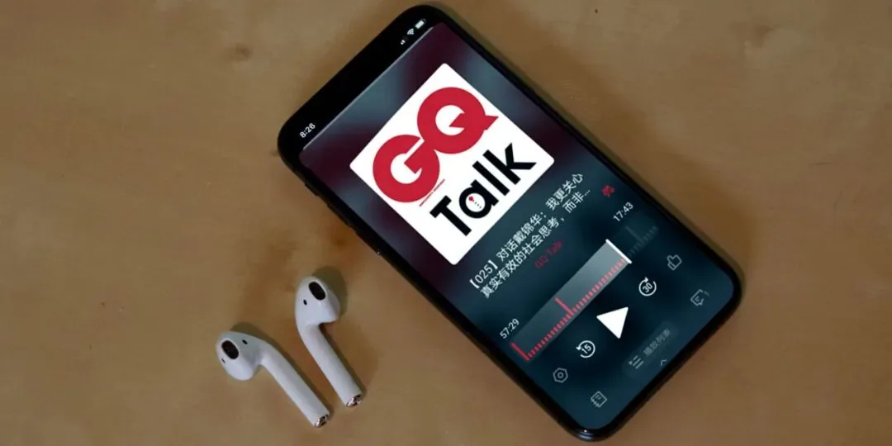

RSS 的二十年
编者按：本文来自即刻早期产品经理 kyth（黄海均），写于 2020 年 3 月，是对 RSS 诞生二十年来的发展回顾与思考。
今天写一下关于 RSS 的理解，其实是快两年前的一句承诺，后来有个同事催了两年，干脆写一下吧。
RSS 的诞生和发展
01 RSS 的缘起
本文无意对RSS这一协议起源的故事展开太多，本身无非也是查资料翻译过来的过程，大家可以自行到维基百科 ₁ 查找，或者阅读Aaron Schwartz ₂ 的故事。
RSS的全称有三种说法，RDF Site Summary, Rich Site Summary和Really Simple Syndication，这些说法概括了它是什么东西： 它是一种对网站内容的简要总结，而使用RSS，能让人做到真正简单的“聚合发行”。 这里就不再对syndication一词的翻译作过多展开，但它确实是一个没有最好的中文翻译的词。
RSS协议的1.0版本是在2000年上线的，距今20年了。
为什么会有RSS？其实，这是互联网发展的必然。
在智能手机时代之前的所有时期，桌面互联网的使用者一直都是人类中的相对精英阶层（尤其在美国），大家浏览网站时始终需要提升效率。每天都打开你要去的所有网站看有没有更新，是低效的，需要一种办法利用技术（即爬虫技术），来把大部分会更新的网页标准格式化，从而可以在日后收到网页更新的提醒，聚在同一处浏览。
换句话说，正如搜索是pull模式提升效率的解法，RSS就是push模式的解法。 我们知道，这两种模式最终各产生了一家互联网时代的超级霸主：Google和Facebook。

02 RSS 的主要应用
RSS算不上是一个特别酷的东西，也没有一个代言人像中本聪一样写白皮书。它更多是基于开放互联网（Open Web）理念塑造的一种效率工具，而我们后来逐渐知道，开发互联网基本只是一小部分地球人能接受和热爱的东西，大多数人最后拥抱的是围墙内的花园模式（walled garden）。后面会继续展开。
RSS的热潮持续时间很短。 这一时期，基于上文所说的RSS的特性，人们最主要想到的能把RSS用起来的场景，主要只有两种：新闻和blog。 后者其实是个人网站的变种：当个人网站的主要更新只是站长写的文字时，有人就把它抽象出来，变成一种公开的网络日志服务，blog（博客）也成了席卷全球并活到今天的一种东西。最有名的因此获得财务自由的人是Blogger的创始人Ev Williams ₃，他把Blogger卖给Google之后继续参与创建了Twitter和Medium，这两者其实都和RSS的精神紧密相关。
无论什么展现形式，利用RSS收取信息都需要至少两步：在目标网站上找到RSS链接，并把它添加到自己选择的一个内容收取服务（软件）里。 这注定了RSS的小众。 我最早使用的RSS阅读器是Bloglines，而最终阅读器之战的赢家是Google Reader。Google不差钱，因此当2013年Google宣布关停Google Reader ₄ 时，所有喜欢RSS的人都知道，这是代表RSS没有明天了。

RSS 的掘墓人
01 社交网络：RSS 的掘墓人
RSS最火的时候大概是2002-2005年，当时有另一个词很火，叫Web2.0 ₅，两者牵涉到的概念和思想各有交叉，也有许多创业者投身进来，包括在中国。
Web 2.0的核心思想是UGC：用户创造内容。 互联网人做出了许多好用的工具和平台，期待当所有人都来创造内容后，互联网能达到极大繁荣。但到2006-2007年后，无论是RSS还是Web2.0，这两个名词不再热乎了，因为它们遇到了究极的对手： 社交网络。
2006年9月6日是互联网历史上极其重要的一天，这一天Facebook推出了News Feed功能。在推出的头一个月，Facebook的老用户甚至还持续到公司门口抗议，但很快大家就没那么在乎隐私了，全球人民都上瘾了。
RSS的重点在推送和聚合，社交网络是究极的推送和聚合。Web2.0的重点是UGC，社交网络是究极的UGC。 RSS产品无法做到的触达用户群和方便好用，社交网络帮你做到了极致。
Facebook和Twitter覆盖了社交网络更偏关系和更偏信息的两个层面，各有受众。我还记得我在2007年用诺基亚E71手机上的塞班版Gravity看推特上瘾到边吃饭边看，虽然仅仅是个很小的屏幕，身边的人都无法理解。十年后大家都是这样了。进入社交网络时代之后，RSS领域再无重大创新，一直到2013年Google Reader宣布关停。
02 RSS 的历史局限
2000年网络泡沫破裂，意味着大多数创业者把“互联网可以赚钱”这件事放下了，但小部分人还记着。而互联网真正开始有大钱可以赚，得等到大多数人都上网，都来用网络服务。都得感谢乔布斯，如果没有iPhone给出智能手机的可能性，全民上网不会到来。
在这个意义上， 古典RSS设计的核心问题在于，它没有商业模式，甚至它是反商业的。 内容方的网站上本来有广告的，当读者借助科技的力量在RSS阅读器里实现了所谓的干净的文章阅读后，广告没有人看了。RSS是一个在商业上无人获益的生态，因此也没有人有足够的动力去把它完善下去，开拓下去。
所以当你发现内容方突然有一天停止更新时，也不要抱怨，这是我们选的。也不要总抱怨一些新闻网站不支持RSS，或者支持得不够好，不够完整。先问一句，凭什么呢？巨婴互联网时代结束了，没有人买单，生意就会倒闭。张一鸣有篇 《为佩奇关闭Google Reader的魄力叫好！》 ₆，用来做这一段的注脚大概是最合适的吧。
RSS 的今天和明天
01 今天的一些 RSS 服务
Google Reader关停是一个标志，之后几乎可以称为后RSS时代。
今天还活着的一些RSS服务，都很有理想主义精神了。其中最重要的一家公司应该是 Feedly ₇，它起到的作用是接过Google Reader的大旗，做RSS源的总目录。它也有客户端，但你也可以用别的客户端去接入你保存在Feedly的订阅数据。
移动客户端呢？
其实RSS，尤其是以“阅读文章”为核心的RSS，并不是一个在移动互联网上足够好的生态。因为在手机上，RSS最有可能的呈现方式，就是一个文章标题的列表。而点击进一篇文章，再返回，是很麻烦的体验。当一个效率更高的体验（例如推特、微博或抖音）出现时，旧体验就会被抛弃。

▲ Reeder
Newsletter和RSS在技术上没有什么关联，但精神内核上其实差不多。 在写长文的这一领域，最近十年来发生的变化是，创作者变少了，创作者也不太有精力去适配RSS格式了。 Newsletter吸引了更多人的注意，因为作者能直接获取读者的邮箱信息，并有Email这个通用协议来保证触达。Substack ₁₁ 这样的创业公司也让更多人看到了赚钱的希望。
最后不得不提一句的是微信公众号，这个产品的精神内核就是RSS，并且产品架构设计和执行得极其出色。它的创造者们，是把RSS的一切都理解透彻了。
当然，再简单说说即刻
即刻其实从第一天开始就很清楚RSS是什么，RSS的局限性，以及即刻比古典RSS更有意思的地方在哪里。
在即刻早期我曾经发过一条微博说，其实即刻才是真正的Really Simple Syndication，甚至是Really Smart Syndication，因为传统RSS只是机械地订阅一个信息源（其假设是相信一个信息源、人或者机构，能稳定、持续地生产出符合自己预期的内容），但比信息源更原始、更本质的需求，是想订阅一个信息，对一个未来可能发生的事情感兴趣。订阅未来。

▲ 即刻1.0与2.0
“利物浦输球提醒”、“现在Twitter上在流行什么”、“Kindle降价提醒”，这些东西在公开的、老旧的互联网和RSS的基础目录里，是缺失的，或者说至少是分散的，以及更多主题，是没有人想到过的。这些需要技术、品味、灵感和洞察。这些是没法抄的。从这种意义上，我们其实是可以很坦率地承认，即刻的早期版本是一个比后面的版本更酷的产品——当然，也更为小众。
此外，RSS时代的所有产品，几乎都没有做社交和互动环节，这是即刻有意加深的部分，甚至是后来的即刻迭代的基础： 你和与你有相近的信息爱好的人应该有的聊，至少你们可以收取同一个信息的时候获得共鸣。 在我看来，Google Reader没有做好这件事，是很可惜的，尤其是当Facebook和Twitter的启示如此明显的时候。
一个还在 RSS 治下的角落
目前，RSS在blog、新闻网站等领域成了一个不起眼的基础设施，不再带有什么波澜。 但有一个行业至今还在依赖着RSS协议发展，并且RSS是它最重要的生态之一。
这就是播客，一个苹果公司发明的东西。 苹果在做播客之初，就决定不做托管，只做目录，因此，一个播客的地址既然放在网上了，就既可以被苹果收录，在苹果播客app里收听，也可以在其他的第三方（所谓的泛用型）播客客户端里通过RSS地址来分发。
播客的特殊点在于：这个行业看起来是赚不到钱了，这么多年了。尤其是移动互联网时代之后，只要玩手机就要用眼睛，视频是绝对的主角。因此，也没有多少人（尤其是资本）冲进来迭代播客这个行业里最基础的那些东西：玩法、收听软件、协议等等。直到今天，播客的分发仍然是以RSS为最主要的分发方式。
播客客户端Overcast的开发者Marco Arment非常享受播客行业的现状，并对Spotify这些new money嗤之以鼻。他向来的观点就是：播客这个花园之所以实现了一定程度上的长尾、繁荣、大家自得其乐，就是因为苹果不作为。当最大的收听渠道在运营和行业发展上很“佛系”时，反而在内容层面促成了一定程度上的百花齐放。
未来会有什么变化呢？不知道。但至少我可以确定，越来越多的年轻人开始听播客了。

▲ 图为一款播客APP
附录：记忆中的那些 RSS 服务
最早的RSS阅读器既有Web端的，也有PC本地端的，前者最著名的两家是 Bloglines 和 Newsgator，后者比较有名的是 GreatNews。
Newsgator是今天的NetNewsWire的前身，而Bloglines是在中国早期Web2.0爱好者中市场占有率最高的产品。Google Reader的推出时间是2005年10月，它改进了Bloglines在交互上的很多不便之处，后来在大约两年之间内，基本宣告了在所有RSS阅读器中的最佳体验，确立了完全胜利。
另外一种服务是 RSS烧制器。它的原理是能把几个RSS源烧制在一起，定制一个自己的RSS feed，给别人订阅。
这个服务是 Feedburner 发明的，2007年，Feedburner被Google收购，一直维护到2012年关闭。例如当年的keso把自己在DoNews托管的blog“对牛乱弹琴”与自己在365key（一个国内的网摘服务，模仿原型是美国的del.icio.us）的每日网摘用Feedburner烧制在一个RSS里，这样他的读者只需订阅一个RSS地址就行了。“个人网摘”这类工作今天国内也有不少极客在做，只是换了个名字叫 newsletter。
RSS领域的创新产品还很多，这里只再提另一个很少有人注意过的： FriendFeed。这个产品利用RSS协议，让人把自己在各种服务里的状态更新聚合到同一个Feed流里。你可能猜到了，它的结局是被Facebook收购，创始人Bret Taylor曾是Google工程师，被收购后做了Facebook的CTO，现在是Salesforce的总裁兼COO。
国外的RSS产品在国内基本都有人跟进， 抓虾 和 鲜果 分别是国内先后出现的类似Bloglines和Google Reader的阅读器。抓虾创始人徐易容把抓虾卖给豆瓣后，二次创业做了美丽说。豆瓣其实也做过站内的RSS抓取业务，产品的名字叫豆瓣九点。Feedburner在国内的模仿者叫Feedsky，创始人吕欣欣后来把公司卖给腾信广告，2014年上市。
相关链接🔗
① RSS 协议起源：https://en.wikipedia.org/wiki/RSS
② Aaron Schwartz 的故事：https://harvardmagazine.com/2013/01/rss-creator-aaron-swartz-dead-at-26
③ Ev Williams：https://medium.com/@ev
④ Google 宣布关停 Google Reader：https://www.theverge.com/2013/3/13/4101144/google-shuts-down-reader-rss-aggregation-service
⑤ Web 2.0：https://en.wikipedia.org/wiki/Web_2.0
⑥《为佩奇关闭 Google Reader 的魄力叫好！》：http://m.techweb.com.cn/article/2013-03-14/1283033.shtml
⑦ Feedly：https://feedly.com/i/welcome
⑧ Reeder：https://reederapp.com/
⑨ NetNewsWire：https://ranchero.com/netnewswire/
⑩ InoReader：https://www.inoreader.com/
⑪ Substack：https://substack.com/
如果你对 kyth 的文章感兴趣，可以访问 kyth.hedwig.pub 查看更多内容。